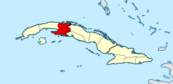

MAPA GENEALÓGICO DE HAPLOGRUPOS (MAGENHA)
UNIENDO LA GENEALOGIA Y LA GENETICA
Vea nuestros RESULTADOS, nuestra investigación RECIENTE, y EN CURSO.
UNIENDO LA GENEALOGIA Y LA GENETICA
Vea nuestros RESULTADOS, nuestra investigación RECIENTE, y EN CURSO.
Este proyecto investigativo pretende desentrañar la historia genética de diversas poblaciones en América Latina, España, Portugal y África. A través de la exhaustiva investigación genealógica y exámenes de ADN, se busca proporcionar información valiosa sobre los patrones históricos de migración, historias de origen y diversidad genética de varias comunidades. Nuestra misión es hacer que este conocimiento sea accesible y gratuito para todos, especialmente aquellos con recursos limitados. A través de la colaboración con voluntarios y donantes, nos esforzamos por avanzar nuestra investigación, ampliar nuestra base de datos y promover una comprensión más profunda del ser humano. herencia genética.
Para apoyar nuestra misión, animamos amablemente a las personas a considerar hacer una donación para nuestro proyecto de investigación.
Considere apoyarnos para que podamos obtener más haplogrupos y sus genealogías. (enlace para donaciones)
.Puede usar nuestros Servicios de Genealogía en Cuba para obtener actas parroquiales. De ese modo nos ayuda a obtener fondos económicos y documentales.

MAGENHA es un proyecto iniciado por Samuel Martínez Alcalá en Junio del 2022
Motivados por nuestra profunda pasión por la genealogía y la genética, nos embarcamos en este proyecto con la creencia de que estas disciplinas contienen la clave para descubrimientos cautivadores que dan forma a la identidad genética de Cuba, las Islas Canarias, la América precolombina y África.
Una de las más prestigiosas asociaciones que promueven la Genealogía Cubana.
La Sociedad de Estudios Genealogicos y Heraldicos de Canarias ofreció apoyo a nuestros objetivos. Tenemos interés común en el ADN de la población aborigen canaria: los guanches.
El Arzobispado de La Habana, mediante permiso escrito, nos permite investigar sus parroquias y fondos.
El Obispado de Pinar del Río, mediante permiso escrito, nos permite investigar sus parroquias y fondos.
El Obispado de Matanzas, mediante permiso escrito, nos permite investigar sus parroquias y fondos.
